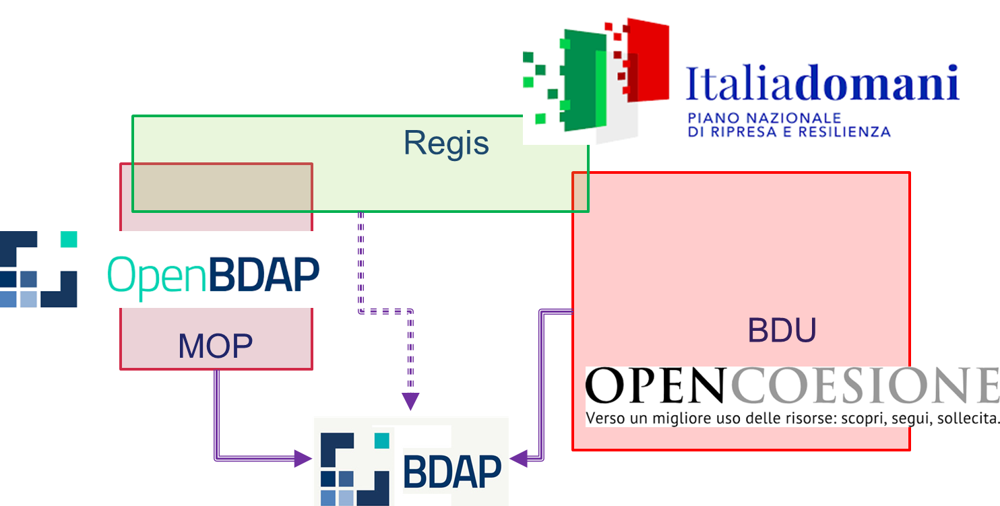

Questa pagina è un esito del lavoro di gruppo dele Pubbliche Amministrazioni e le organizzazioni della Società Civile nel contesto del VI Piano d’Azione Nazionale per il governo aperto.
I Sistemi di Monitoraggio
Il monitoraggio degli investimenti pubblici in Italia attualmente soffre di una certa frammentazione, causata da diversi fattori:
- Disciplina normativa/amministrativa diversa a seconda della fonte di finanziamento;
- Molteplicità dei sistemi informativi a cui sono trasmessi i dati di monitoraggio;
- Diversi soggetti responsabili del monitoraggio.
Questa situazione ha portato alla creazione di diversi sistemi di monitoraggio per progetti pubblici.
Sono tre i principali in Italia:
- ReGiS: per i progetti finanziati dal Piano Nazionale di Ripresa e Resilienza (PNRR);
- BDU (Banca Dati Unitaria): per i progetti finanziati dalle politiche di coesione fino alla programmazione 2014-2020;
- MOP (Monitoraggio Opere Pubbliche): per gli investimenti nazionali non cofinanziati dal PNRR o dalle politiche di coesione, inclusi i progetti del Piano Nazionale Complementare (PNC) senza cofinanziamento PNRR.
Inizialmente, tramite il sistema MOP venivano monitorate solo le opere pubbliche finanziate esclusivamente da fondi nazionali. Tuttavia, ad oggi il suo utilizzo è stato esteso per includere anche i progetti finanziati con il Piano Nazionale Complementare e altri decreti che finanziano progetti non necessariamente legati alle opere pubbliche.
ReGiS è il principale strumento attraverso cui le amministrazioni centrali e territoriali possono adempiere agli obblighi di Monitoraggio, Rendicontazione e Controllo delle misure e dei progetti finanziati dal PNRR.
Garantisce inoltre il rispetto degli obblighi previsti dal Decreto Legislativo 229/2011 in merito al monitoraggio degli investimenti pubblici. Come previsto dalla Legge 178/2020, ReGiS sarà adottato anche per i dati relativi alle politiche di coesione nel ciclo di programmazione 2021-2027, mentre per le precedenti programmazioni i dati confluiscono nella Banca Dati Unitaria (BDU).
Pubblicazione dei Dati
I dati raccolti dai diversi sistemi di monitoraggio vengono pubblicati su differenti piattaforme, a seconda della fonte:
- ReGiS: i dati sono pubblicati su ItaliaDomani;
- MOP: i dati sono pubblicati su OpenBDAP;
- BDU: i dati sono disponibili su OpenCoesione.
Tutti questi dati alimentano costantemente la Banca Dati delle Pubbliche Amministrazioni (articolo 13 della legge n. 196 del 2009), per garantire l’operatività dei sistemi collegati e delle linee di finanziamento gestite, anche se al momento questo processo ha rilevanza solo interna alla Ragioneria Generale dello Stato (RGS).
Sovrapposizione dei Dati
Come scritto in premessa e come si può notare dalla descrizione dei sistemi di monitoraggio, esiste una certa sovrapposizione dei dati, in quanto i progetti possono essere finanziati da più fonti e quindi monitorati da più sistemi.

Verso un Sistema Unico di Monitoraggio
La RGS sta lavorando all’implementazione di un sistema unico di monitoraggio per garantire il principio di unicità dell’invio dei dati e superare le attuali criticità. Tuttavia, questa soluzione richiederà ancora del tempo per essere realizzata.